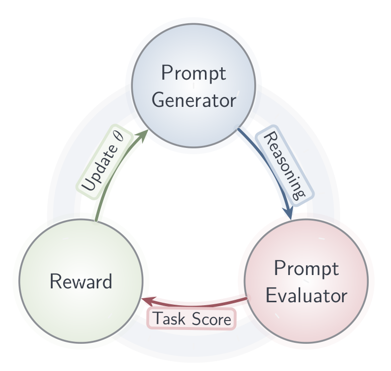
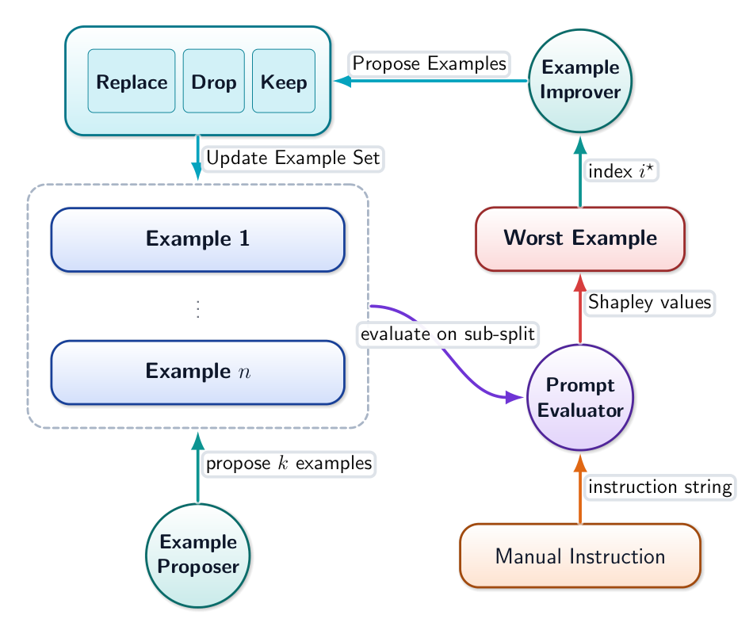
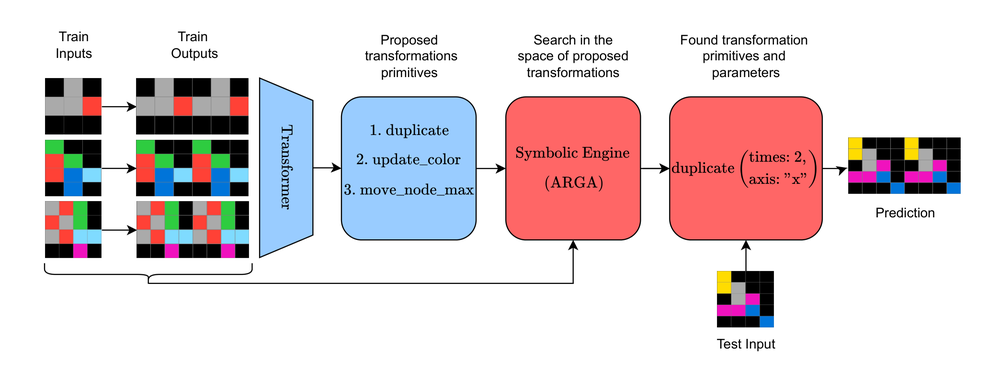
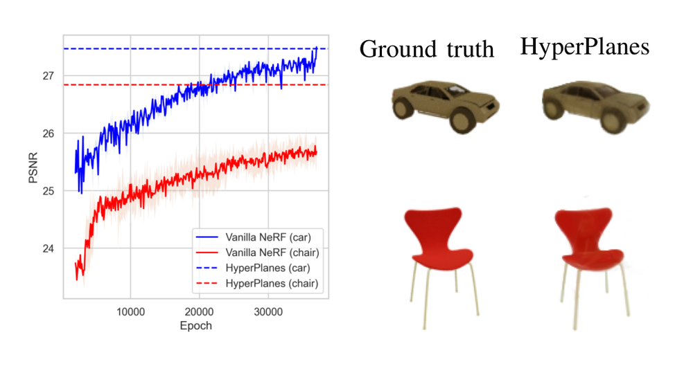
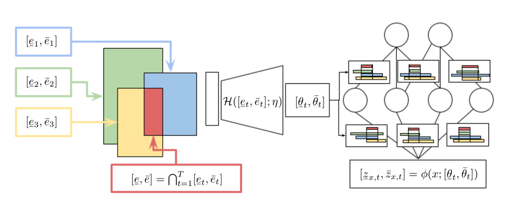
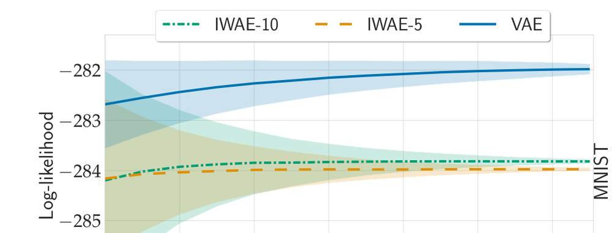

I am a PhD student at Heinrich-Heine-Universität Düsseldorf under the supervision of Prof. Dr. Paul Swoboda, working at the intersection of deep learning and natural language processing.
My main research interests include, but are not limited to:
e.g. prompt engineering and efficient inference-time methods
training models to follow instructions and improve reasoning via RL
selectively removing knowledge from a model after training
A hand-picked selection; for the full list see my Google Scholar or arXiv page. 🔥 top-tier AI/ML venue. Hover over a figure to enlarge it.

Effective prompt engineering remains a central challenge in fully harnessing the capabilities of LLMs. While well-designed prompts can dramatically enhance performance, crafting them typically demands expert intuition and a nuanced understanding of the task. Moreover, the most impactful prompts often hinge on subtle semantic cues, ones that may elude human perception but are crucial for guiding LLM behavior. In this paper, we introduce PRL (Prompts from Reinforcement Learning), a novel RL-based approach for automatic prompt generation. Unlike previous methods, PRL can produce novel few-shot examples that were not seen during training. Our approach achieves state-of-the-art performance across a range of benchmarks, including text classification, simplification, and summarization. On the classification task, it surpasses prior methods by 2.58% over APE and 1.00% over EvoPrompt. Additionally, it improves the average ROUGE scores on the summarization task by 4.32 over APE and by 2.12 over EvoPrompt and the SARI score on simplification by 6.93 over APE and by 6.01 over EvoPrompt.

LLMs are highly sensitive to prompt design, but handcrafting effective prompts is difficult and often requires intricate crafting of few-shot examples. We propose a fast automatic prompt construction algorithm that augments human instructions by generating a small set of few shot examples. Our method iteratively replaces/drops/keeps few-shot examples using Monte Carlo Shapley estimation of example utility. For faster execution, we use aggressive subsampling and a replay buffer for faster evaluations. Our method can be run using different compute time budgets. On a limited budget, we outperform existing automatic prompting methods on text simplification and GSM8K and obtain second best results on classification and summarization. With an extended, but still modest compute budget we set a new state of the art among automatic prompting methods on classification, simplification and GSM8K. Our results show that carefully constructed examples, rather than exhaustive instruction search, are the dominant lever for fast and data efficient prompt engineering.

The Abstraction and Reasoning Corpus (ARC) evaluates general reasoning capabilities that are difficult for both machine learning models and combinatorial search methods. We propose a neuro-symbolic approach that combines a transformer for proposal generation with combinatorial search using a domain-specific language. The transformer narrows the search space by proposing promising search directions, which allows the combinatorial search to find the actual solution in short time. We pre-train the transformer with synthetically generated data. During test-time we generate additional task-specific training tasks and fine-tune our model. Our results surpass comparable state of the art on the ARC evaluation set by 27% and compare favourably on the ARC train set. We make our code and dataset publicly available.

Neural radiance fields (NeRFs) are a widely accepted standard for synthesizing new 3D object views from a small number of base images. However, NeRFs have limited generalization properties, which means that we need to use significant computational resources to train individual architectures for each item we want to represent. To address this issue, we propose a few-shot learning approach based on the hypernetwork paradigm that does not require gradient optimization during inference. The hypernetwork gathers information from the training data and generates an update for universal weights. As a result, we have developed an efficient method for generating a high-quality 3D object representation from a small number of images in a single step. This has been confirmed by direct comparison with the state-of-the-art solutions and a comprehensive ablation study.

Recently, a new Continual Learning (CL) paradigm was presented to control catastrophic forgetting, called Interval Continual Learning (InterContiNet), which relies on enforcing interval constraints on the neural network parameter space. Unfortunately, InterContiNet training is challenging due to the high dimensionality of the weight space, making intervals difficult to manage. To address this issue, we introduce HINT, a technique that employs interval arithmetic within the embedding space and utilizes a hypernetwork to map these intervals to the target network parameter space. We train interval embeddings for consecutive tasks and train a hypernetwork to transform these embeddings into weights of the target network. An embedding for a given task is trained along with the hypernetwork, preserving the response of the target network for the previous task embeddings. Interval arithmetic works with a more manageable, lower-dimensional embedding space rather than directly preparing intervals in a high-dimensional weight space. Our model allows faster and more efficient training. Furthermore, HINT maintains the guarantee of not forgetting. At the end of training, we can choose one universal embedding to produce a single network dedicated to all tasks. In such a framework, hypernetwork is used only for training and, finally, we can utilize one set of weights. HINT obtains significantly better results than InterContiNet and gives SOTA results on several benchmarks.

Many crucial problems in deep learning and statistical inference are caused by a variational gap, i.e., a difference between model evidence (log-likelihood) and evidence lower bound (ELBO). In particular, in a classical VAE setting that involves training via an ELBO cost function, it is difficult to provide a robust comparison of the effects of training between models, since we do not know a log-likelihood of data (but only its lower bound). In this paper, to deal with this problem, we introduce a general and effective upper bound, which allows us to efficiently approximate the evidence of data. We provide extensive theoretical and experimental studies of our approach, including its comparison to the other state-of-the-art upper bounds, as well as its application as a tool for the evaluation of models that were trained on various lower bounds.